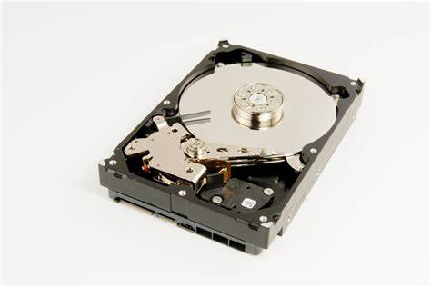

CLASIFICACION Y FUNCIONAMIENTO DE LOS MEDIOS DE ALMACENAMIENTO
Los medios de almacenamiento se clasifican de acuerdo con sus propiedades,
entre estos se encuentra el soporte magnético, incluye una cinta magnética
y el disco duro, el soporte óptico como el CD, DBD, Blu-ray y el soporte de estado
sólido donde encontramos la memoria USB, tarjeta de memoria y memory stick.
El precio de los dispositivos es otro criterio que debemos tomar en cuenta al momento
de elegir, ejemplo el DBD es la más económica. Otras alternativas como
la nube, Dropbox, Google Drive, OneDrive o Mega ofrecen almacenamiento gratuito desde
2 GB hasta 50 GB.
CAPACIDAD DE ALMACENAMIENTO
Todos los elementos de las computadoras evolucionan continuamente. La ley Moore indica
que cada 18 meses el número de transistores en un chip se duplica. Un transistor
sirve para representar unos y ceros, que es lo que entiende una computadora. Si se
duplican los transistores en un chip la computadora almacenara más ceros y unos,
contara con mayor capacidad de almacenamiento. La capacidad de almacenamiento y de los
medios de almacenamiento se mide en bytes que es el conjunto de ocho bits, un bit es un
cero o uno. Las computadoras solo entienden ceros y unos, la letra A se almacena utilizando
01000001, existe una tabla que muestra las representaciones de los caracteres.
Una computadora emplea la memoria primaria (RAM) o secundaria para almacenar los
datos y programas. Para medir la cantidad se utilizan unidades como kilobytes,
megabytes, o terabytes. Las memorias RAM tiene una capacidad de almacenamiento
de 2,4,6,8,16,24,32 o 64 Gigabytes, las memorias secundarias tienen capacidad de
almacenamiento mayor, de 500, 600, 700 Gigabytes i de 1 Terabyte.
